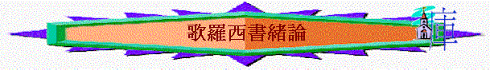

一.作者：保羅
二.對象：歌羅西教會
〜歌羅西本是小亞細亞(今土耳其)的大城，附近有老底嘉和希拉波立兩城(都同於弗呂家)，當時受羅馬管治
〜而住在歌羅西的居民，有猶太人及外邦人，他們也受猶太教及希臘文化哲學思想影響
〜保羅應沒有直接在此地作佈道工作，但可能他的同工以巴弗曾到歌羅西、老底嘉、希拉波傳道(西4:12-14)，建立了歌羅西教會
三.時間：約主後61年
四.背景
1.神僕被囚仍念教會
「我保羅親筆問你們安。你們要記念我的捆鎖。願恩惠常與你們同在！」西4:18
「我身子雖與你們相離，心卻與你們同在，見你們循規蹈矩，信基督的心也堅固，我就歡喜了。」2:5
2.教會成長仍有危機
A.教會成長的事實
「因聽見你們在基督耶穌裡的信心，並向眾聖徒的愛心，」1:4
「這福音傳到你們那裡，也傳到普天之下，並且結果，增長，如同在你們中間，自從你們聽見福音，真知道神恩惠的日子一樣。」1:6
B.異端哲學的衝激
「我說這話，免得有人用花言巧語迷惑你們。」2:4
「你們要謹慎，恐怕有人用他的理學和虛空的妄言，不照著基督，乃照人間的遺傳和世上的小學就把你們擄去。」2:8
C.重回舊路的警號
「你們若是與基督同死，脫離了世上的小學，為什麼仍像在世俗中活著、服從那「不可拿、不可嘗、不可摸」等類的規條呢？」2:20-21
五.異端邪說與本書回應
1.追求地上智慧
「你們要謹慎，恐怕有人用他的理學和虛空的妄言，不照著基督，乃照人間的遺傳和世上的小學就把你們擄去。」2:8
「因此，我們自從聽見的日子，也就為你們不住的禱告祈求，願你們在一切屬靈的智慧悟性上，滿心知道神的旨意；」1:9
「所以，你們若真與基督一同復活，就當求在上面的事；那裡有基督坐在神的右邊。」3:1
「有你們那裡的人，作基督耶穌僕人的以巴弗問你們安。他在禱告之間，常為你們竭力的祈求，願你們在神一切的旨意上得以完全，信心充足，能站立得穩。」4:12
〜當時流行智慧學派的學說，人喜愛追求哲學與地上的智慧，不信古時的神話和先前敬拜的神，看智慧比信仰更重要，更有異端認為追求他們的智慧，人就能「完全」。
〜保羅指出在基督�堙A可以找到一切智慧知識，人不應追求地上的事，應用智慧悟性追求天上神的旨意，這才能使人得到真正的「完全」。
2.敬拜天上使者
「不可讓人因著故意謙虛和敬拜天使，就奪去你們的獎賞。這等人拘泥在所見過的（有古卷：這等人窺察所沒有見過的），隨著自己的慾心，無故的自高自大，」2:18
〜當時也有一種二元論思想，認為神與物質有絕對的分別，因此，神和物質的世界之間不可能有接觸，神若要與物質世界接觸，必須造出一些與神和物質都可以有接觸的被造之物(比神低級)，而天使是其中一種，比神低但卻比人高，所以人要敬拜天使，而猶太教也對於天使的使者有崇高敬意。
〜保羅指出敬拜天使的錯誤
3.貶低基督位份
「愛子是那不能看見之神的像，是首生的，在一切被造的以先。」1:15
「他也是教會全體之首。他是元始，是從死裡首先復生的，使他可以在凡事上居首位。」1:18
〜有另一流行的異端----諾斯底派否認耶穌的神性，耶穌只是抽象原則，不是有位格的兒子，而另外由二元論的思想，也引伸有些人認為基督也是其中一種神人之間的被造物，比天使地位更低(因祂親身來到世間接觸邪惡的物質世界)
〜保羅要說明基督是神的愛子，是神的像，是教會全體之首，是居首位的。
4.歪曲創造真理
「因為萬有都是靠他造的，無論是天上的，地上的；能看見的，不能看見的；或是有位的，主治的，執政的，掌權的；一概都是藉著他造的，又是為他造的。」1:16
〜另外有人認為物質是邪惡的，不可能是神創造的，所以他們認為是天使及被造之物創造
〜保羅卻指出萬物是神的兒子創造的
5.隱藏奧秘學說
「這道理就是歷世歷代所隱藏的奧秘；但如今向他的聖徒顯明了。」1:26
「要叫他們的心得安慰，因愛心互相聯絡，以致豐豐足足在悟性中有充足的信心，使他們真知神的奧秘，就是基督。」2:2
〜有異端指他們的「奧秘」是特異的，是隱藏的，是少人明的，唯有達到教中最高階級才能明白隱藏的奧秘。
〜保羅卻指出隱藏的奧秘已顯明，而神的奧秘不是異端道理，而乃是基督。
6.天使擁有豐盛
「因為神本性一切的豐盛都有形有體的居住在基督裡面，」2:9
〜天使是神人中間的連貫者，是從神產生的，有神的性情，所以也稱為「豐盛」或作「充滿」
〜但保羅指出神本性一切的豐盛都住在基督�堶情A不是從天使及人間的哲學中找到。
7.謹守律法規例
「所以，不拘在飲食上，或節期、月朔、安息日都不可讓人論斷你們。」2:16
「你們若是與基督同死，脫離了世上的小學，為什麼仍像在世俗中活著、服從那「不可拿、不可嘗、不可摸」等類的規條呢？」2:20-21
〜有人仍受猶太教影響，拘泥禮節，仍為死守規例才完全
〜保羅指出這些其實是對人的得救，人的完全毫無功效。
8.克制肉體情慾
「這些規條使人徒有智慧之名，用私意崇拜，自表謙卑，苦待己身，其實在克制肉體的情慾上是毫無功效。」2:23
「你們從前在過犯和未受割禮的肉體中死了，神赦免了你們（或作：我們）一切過犯，便叫你們與基督一同活過來；又塗抹了在律例上所寫攻擊我們，有礙於我們的字據，把他撤去，釘在十字架上。」2:13-14
〜有人認為物質是惡，所以追求苦待自己來克制肉體，可以勝過地上邪惡的物質
〜保羅指出真正勝過罪惡是靠基督的死
六.本書目的
「只要你們在所信的道上恆心，根基穩固，堅定不移，不至被引動失去﹝原文作離開﹞福音的盼望。這福音就是你們所聽過的，也是傳與普天下萬人聽的（原文作凡受造的），我保羅也作了這福音的執事。」1:23
「我們傳揚他，是用諸般的智慧，勸戒各人，教導各人，要把各人在基督裡完完全全的引到神面前。」1:28
「我身子雖與你們相離，心卻與你們同在，見你們循規蹈矩，信基督的心也堅固，我就歡喜了。」2:5
「不持定元首。全身既然靠著他，筋節得以相助聯絡，就因神大得長進。」2:19
「有你們那裡的人，作基督耶穌僕人的以巴弗問你們安。他在禱告之間，常為你們竭力的祈求，願你們在神一切的旨意上得以完全，信心充足，能站立得穩。」4:12
1.
更加完全
〜期望信徒能更加成熟，而成熟完全的方法並不是追求地上的無益思想，是要追求神的旨意(或心意)
2.
持定基督
〜神的心意是甚麼？神的意思、心意、奧秘、已在基督�塈鋮魽A信徒不需要靠其它天使、思想，只要一生持守基督，堅定不移，信心穩固，在基督�塈畯怚i得著豐盛及成長(完全)
3.
活出基督
〜當信徒真持定基督，連於祂，自然可以活出基督復活、更新的生命，在地上流露基督的樣式，這才是得勝罪惡的方法，當信徒生命似主時，將來在天上也真正是完全，在神坦然站立。
七.本書主題：持定元首、活出基督
|
持
定 元 首 、 活 出 基 督 |
|
|
持
定 元 首 |
活
出 基 督 |
|
1-3:4 |
3:5-4:18 |